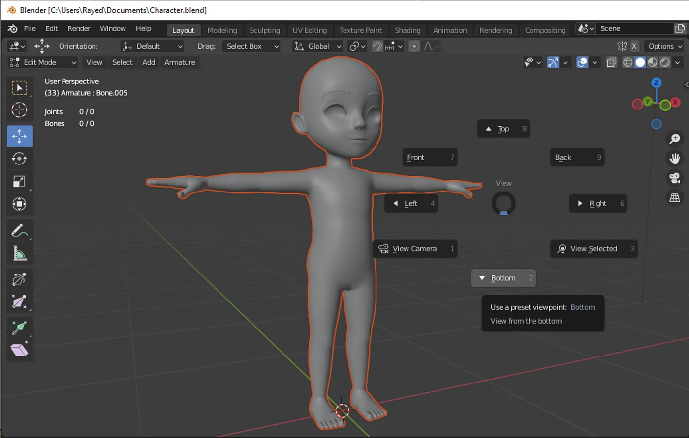

IT 280 · Computer Graphics and Multimedia · Week 14
Character animation from rig to playable character
How characters move: skeletons and skinning, forward and inverse kinematics, motion capture and animation libraries, and Unity’s Animator state machines.
After this week you can
- Explain armatures, bind poses and the bone hierarchy.
- Explain skinning and vertex weights, and fix weights by painting.
- Distinguish forward and inverse kinematics and choose between them.
- Compare keyframing, motion capture and animation libraries, and log their licences.
- Import humanoid characters and clips into Unity and retarget them.
- Build an Animator state machine driven by script parameters.
بعد هذا الأسبوع ستكون قادرًا على أن:
- تشرح الهيكل العظمي ووضعية الربط وتسلسل العظام.
- تشرح ربط الجلد بالهيكل وأوزان الرؤوس، وتصلح الأوزان بالرسم.
- تميّز الحركيات الأمامية من العكسية وتختار بينهما.
- تقارن التحريك بالإطارات المفتاحية والتقاط الحركة ومكتبات التحريك، وتسجّل تراخيصها.
- تستورد شخصيات بشرية ومقاطع تحريك إلى Unity وتعيد توجيهها.
- تبني آلة حالات للتحريك تقودها معاملات من النص البرمجي.
ترجمة عربية مساندة للشرح. المرجع هو النص الإنجليزي، وهو لغة الاختبارات والبرامج.
01 · Skeletal animation
Animating characters with a skeleton
حرّك الأسبوع 7 أجسامًا كاملة بالإطارات المفتاحية. أما الشخصية فمختلفة: ذراعها تنثني عند المرفق وبقية الجسم ثابتة. وتحريك آلاف الرؤوس إطارًا إطارًا مستحيل، فتُحرَّك الشخصيات عبر هيكل عظمي.
الهيكل (armature) تسلسل من العظام: الحوض ← العمود الفقري ← الصدر ← الكتف ← العضد ← الساعد ← اليد. وهو تسلسل الأب والابن نفسه في الأسبوع 9: تدوير العضد يحمل معه الساعد واليد، لأن تحويل كل عظمة هو تحويل أبيها مضروبًا في تحويلها المحلي. فيضع المحرِّك مفاتيح لعشرات من دورانات العظام فقط، وتتبعها الشبكة.
ويُركَّب الهيكل داخل الشبكة في وضعية ربط محايدة، عادةً وضعية T أو A بذراعين ممدودتين، وتُخزَّن كل حركة كدورانات للعظام نسبةً إليها.
وهذه أكثر تقنيات التحريك استخدامًا في الألعاب والأفلام: هيكل واحد يشغّل مئات المقاطع، ومقطع واحد يحرّك شخصيات كثيرة تشترك في الهيكل نفسه.
تحقّق من فهمك: شخصية تلوّح بيدها. أي العظام تحتاج مفاتيح، ولماذا لا يحتاج موضع اليد مفاتيح؟
الإجابة: دورانات الكتف والعضد والساعد واليد. وموضع اليد يتبع تلقائيًا آباءها في التسلسل؛ فالمفاتيح للدورانات فقط.
ترجمة عربية مساندة للشرح. المرجع هو النص الإنجليزي، وهو لغة الاختبارات والبرامج.
Week 7 animated whole objects with keyframes. A character is different: its arm bends at the elbow while the rest of the body stays put. Moving thousands of vertices one keyframe at a time is impossible, so characters are animated through a skeleton.
An armature is a hierarchy of bones: hips → spine → chest → shoulder → upper arm → forearm → hand. It is exactly the parent–child hierarchy of Week 9: rotating the upper arm carries the forearm and hand with it, because each bone’s transform is its parent’s transform times its own local transform. The animator keys only a few dozen bone rotations; the mesh follows.
The skeleton is fitted inside the mesh in a neutral bind pose (also called rest pose), usually a T-pose or A-pose with arms out. Every animation is stored as bone rotations relative to that pose.
This is the most widely used animation technique in games and film: one skeleton can play hundreds of animation clips, and one animation can drive many characters that share the same skeleton.

A character waves its hand. Which bones must be keyed, and why does the hand not need keys for its position?
The shoulder, upper arm, forearm and hand rotations. The hand’s position follows automatically from its parents in the hierarchy (Week 9); only rotations are keyed.
02 · Skinning
Skinning: how the mesh follows the bones
ربط الجلد (skinning) يصل الشبكة بالهيكل. فكل رأس يخزّن قائمة العظام المؤثرة فيه ووزنًا لكل منها بين 0 و1 مجموعها 1. فرأس في منتصف الساعد يتبع عظمة الساعد بوزن 1، ورأس عند المرفق يتبع العضد 50% والساعد 50%، فينثني الجلد بنعومة بدل أن يتمزق.
وتحسب GPU كل رأس في مظلِّل الرؤوس بـالدمج الخطي للجلد: تحوّل الرأس بمصفوفة كل عظمة مؤثرة ثم تأخذ المتوسط الموزون:
v′ = Σ wᵢ · Mᵢ · v (Σ wᵢ = 1)
وتحدّ المحرّكات الآنية كل رأس عادةً بأربع عظام. وتُولَّد الأوزان تلقائيًا في Blender (Ctrl + P › With Automatic Weights) وتُصحَّح يدويًا بـرسم الأوزان: الأحمر وزن 1 والأزرق 0.
الطوبولوجيا مهمة. كما تُظهر ملاحظات CPIT285 القديمة بمثال المرفق، تحتاج المفاصل حلقات حواف إضافية حولها، وإلا انهارت الشبكة عند الانثناء. وللدمج الخطي ضعف معروف: المفصل الملتوي كثيرًا يفقد حجمه وينضغط كغلاف الحلوى.
ربط الشبكة بـWith Empty Groups وحده؛ فلا أوزان للشبكة ولا تتحرك. استخدم With Automatic Weights ثم أصلح المناطق المشكلة برسم الأوزان.
ترجمة عربية مساندة للشرح. المرجع هو النص الإنجليزي، وهو لغة الاختبارات والبرامج.
Skinning attaches the mesh to the skeleton. Each vertex stores a list of bones that influence it and a weight for each, between 0 and 1, summing to 1. A vertex in the middle of the forearm follows the forearm bone with weight 1. A vertex at the elbow follows the upper arm 50% and the forearm 50%, so the skin bends smoothly instead of tearing.
The GPU computes each skinned vertex in the vertex shader by linear blend skinning: transform the vertex by each influencing bone’s matrix (relative to the bind pose) and average the results by weight:
v′ = Σ wᵢ · Mᵢ · v (Σ wᵢ = 1)
Real-time engines usually limit each vertex to four bone influences, which is enough for most characters. Weights are generated automatically in Blender () and corrected by hand with weight painting, where red means weight 1 and blue means 0.
Topology matters. As the old CPIT285 notes show with the elbow example, joints need extra edge loops around them; with too few, the mesh collapses when it bends. Blending matrices linearly also has a known weakness: a joint twisted far loses volume and pinches like a sweet wrapper. Extra bones, better weights or alternative skinning methods fix it.
Try it · skinning an arm
Bend the elbow. Compare rigid skinning (each vertex follows one bone) with smooth weights blended across the joint.Binding the mesh with Ctrl + P › With Empty Groups or Armature Deform alone. The mesh then has no weights and does not move. Use With Automatic Weights, then fix problem areas by weight painting.
03 · Kinematics
Forward and inverse kinematics
هناك طريقتان لتوضيع سلسلة عظام:
- الحركيات الأمامية (FK): دوّر كل عظمة من الجذر إلى الخارج (الكتف ثم المرفق ثم الرسغ)، فتنتهي اليد حيث تضعها الدورانات. طبيعية للحركات المتأرجحة كالذراعين أثناء المشي.
- الحركيات العكسية (IK): ضع هدفًا حيث يجب أن تنتهي السلسلة (قدم على درجة، يد على مقبض باب) ودع المحلّل يحسب دورانات المفاصل. ضرورية حين يجب أن تلمس الشخصية شيئًا أو تبقى قدماها على أرض غير مستوية.
ويضيف Blender الحركيات العكسية بقيد IK؛ وأنظمة مثل Rigify تولّد عناصر تحكم FK وIK تلقائيًا. وتدعم شخصيات Humanoid في Unity الحركيات العكسية للقدمين واليدين.
تحقّق من فهمك: شخصية تصعد درجًا، لكن مقطع المشي سُجّل على أرض مستوية فتطفو القدمان أو تغوصان. ما التقنية التي تصلح ذلك أثناء التشغيل؟
الإجابة: الحركيات العكسية للساقين: في كل إطار جد سطح الدرجة تحت كل قدم (بإسقاط شعاع، الأسبوع 13) واجعله هدف القدم، فيثني المحلّل الركبة للوصول إليه.
ترجمة عربية مساندة للشرح. المرجع هو النص الإنجليزي، وهو لغة الاختبارات والبرامج.
There are two ways to pose a chain of bones:
- Forward kinematics (FK): rotate each bone from the root outwards (shoulder, then elbow, then wrist). The hand ends up wherever the rotations put it. Natural for swinging motions such as arms while walking.
- Inverse kinematics (IK): place a target where the end of the chain must be (a foot on a step, a hand on a door handle) and let the solver compute the joint rotations. Essential when a character must touch something or keep its feet on uneven ground.
Blender adds IK with an IK bone constraint; production rigs such as Blender’s Rigify generate FK and IK controls for arms and legs automatically. Unity’s Humanoid characters support foot and hand IK in the Animator, and the Animation Rigging package adds more constraints at runtime.
A character walks up stairs, but the walking animation was recorded on flat ground. Its feet float above or sink into the steps. Which technique fixes this at runtime, and how?
Inverse kinematics on the legs: each frame, find the step surface under each foot (with a raycast, Week 13) and set it as the foot’s IK target, so the solver bends the knee to reach it.
04 · Where animation comes from
Keyframes, motion capture and libraries
تأتي مقاطع التحريك من ثلاثة مصادر رئيسية:
- الإطارات المفتاحية بيد المحرِّك، بمبادئ الأسبوع 7. الأفضل للحركة المؤسلبة أو المستحيلة.
- التقاط الحركة يسجّل مؤديًا حقيقيًا: أنظمة بصرية تتبع علامات عاكسة بكاميرات كثيرة، وبدلات قصورية بحسّاسات حركة، وأدوات أحدث تعتمد الفيديو تقدّر الهيكل من فيديو عادي بتعلّم الآلة. وتصف الملاحظات القديمة التقاط الأداء الآني حيث يقود ممثل شخصية مباشرةً.
- المكتبات: يوفّر Mixamo من Adobe ربطًا تلقائيًا (ارفع الشخصية وحدّد الذقن والرسغين والمرفقين والركبتين والحوض) وآلاف الحركات، مجانًا بحساب Adobe شخصي؛ ولا يعمل بحسابات المؤسسات. وتسمح الأسئلة الشائعة لـAdobe باستخدام شخصياته وحركاته دون رسوم في المشاريع الشخصية والتجارية وغير الربحية، دون إعادة توزيع الملفات الخام. وهو متاح لكنه لم يعد يُطوَّر، فمكتبات CC0 مثل مكتبة Quaternius بديل جيد. سجّل المصدر والرخصة في سجل الأصول.
إعادة توجيه الحركة تشغّل حركة صُنعت لهيكل على هيكل آخر بنسب مختلفة. ونوع Humanoid في Unity يطابق كل هيكل بشري مع Avatar معياري، فيعمل أي مقطع بشري على أي شخصية بشرية.
وتُحرَّك الوجوه غالبًا بـأشكال المزج (shape keys في Blender): نسخ منحوتة من الشبكة (ابتسامة، رمشة، أشكال الفم في الكلام) تُمزج بأوزان.
مثال محلول · الذاكرة: لماذا الهيكل أفضل من تخزين الرؤوس
- شخصية بـ20 000 رأس ومشية مدتها ثانيتان بـ30 fps (60 إطارًا).
- تخزين موضع كل رأس لكل إطار: 20 000 × 3 × 4 × 60 ≈ 14.4 MB.
- تخزين 60 عظمة × 4 قيم دوران × 4 بايتات × 60 إطارًا ≈ 58 KB، أقل بنحو 250 مرة.
- والمقطع نفسه يحرّك كل شخصية تشترك في الهيكل.
ترجمة عربية مساندة للشرح. المرجع هو النص الإنجليزي، وهو لغة الاختبارات والبرامج.
Animation clips for a skeleton come from three main sources:
- Keyframing by an animator, with the principles of Week 7: timing, spacing, anticipation, follow-through. Best for stylised or impossible motion.
- Motion capture (mocap) records a real performer. Optical systems track reflective markers with many cameras; inertial suits use motion sensors; newer video-based tools estimate a skeleton from ordinary video with machine learning. The old notes describe real-time performance capture, where an actor drives a character live: on stage, on TV or in previsualisation. Mocap data is usually cleaned up by hand afterwards.
- Libraries of ready-made clips. Mixamo (Adobe) offers auto-rigging (upload a character, mark chin, wrists, elbows, knees and groin) and thousands of motions, free with a personal Adobe ID; it is not available with enterprise or federated (institutional) IDs. Adobe’s FAQ allows royalty-free use of its characters and animations in personal, commercial and non-profit projects, but not redistributing the raw files. It is still online but no longer actively developed, so CC0 libraries such as Quaternius’s animation library are a good alternative. Record the source and licence in your asset log, as for any other asset (Week 1).
Retargeting plays an animation made for one skeleton on another with different proportions. Unity’s Humanoid rig type maps every humanoid skeleton onto a standard Avatar, so any humanoid clip plays on any humanoid character.
Faces are often animated differently: blend shapes (Blender: shape keys) store sculpted versions of the mesh (smile, blink, the mouth shapes of speech) and mix between them with weights, just like the bones’ weights but for whole shapes.
Worked example · memory: why skeletons beat storing vertices
- A character has 20 000 vertices and a 2-second walk at 30 fps (60 frames).
- Storing every vertex position per frame: 20 000 × 3 floats × 4 bytes × 60 ≈ 14.4 MB.
- Storing 60 bones × 4 rotation values (a quaternion) × 4 bytes × 60 frames ≈ 58 KB, about 250 times less.
- And the same 58 KB clip can drive every character that shares the skeleton.
05 · Animation in Unity
Animation clips, the Animator and state machines
ملف FBX من Blender أو Mixamo يحوي الشبكة والهيكل ومقطع تحريك أو أكثر. وفي Unity: في تبويب Rig اختر Humanoid (أو Generic لغير البشر) لإنشاء Avatar؛ وفي تبويب Animation فعّل Loop Time للحركات الدورية كالمشي.
ومكوّن Animator يشغّل المقاطع بتحكم Animator Controller، وهو آلة حالات ترسمها في نافذة Animator:
- كل حالة تشغّل مقطعًا: وقوف، مشي، قفز، تلويح.
- الانتقالات (الأسهم) تنقل بين الحالات بمزج قصير فيكون التغيّر ناعمًا.
- المعاملات تُضبط من النصوص البرمجية، مثل animator.SetFloat("Speed", 1)، وتعمل الانتقالات بـشروط مثل Speed > 0.1. وألغِ Has Exit Time ليحدث الانتقال فور تحقق الشرط.
- شجرة المزج تمزج المقاطع بمعامل: السرعة 0 وقوف، 0.5 مشي، 1 جري.
وحركة الجذر تحدد من يحرّك الشخصية في العالم: إن فُعّلت حرّكها المقطع نفسه فلا تنزلق القدمان؛ وإن أُلغيت حرّكها النص البرمجي ويجب أن يكون المقطع «في المكان» (خيار In Place في Mixamo). ويستخدم اللاب مقاطع في المكان ونصًا برمجيًا.
منطق التحريك مكانه آلة الحالات؛ والنصوص البرمجية تضبط المعاملات فقط.
ادمج أصولك النهائية، وأصلح أخطر مشكلات اختبار قابلية الاستخدام، وجهّز العرض والتقرير للأسبوع 15. وإن كان في تطبيقك شخصيات فمتحكّم الوقوف والمشي في لاب اليوم قابل لإعادة الاستخدام مباشرة.
ترجمة عربية مساندة للشرح. المرجع هو النص الإنجليزي، وهو لغة الاختبارات والبرامج.
An FBX file from Blender or Mixamo contains the mesh, the skeleton and one or more animation clips. In Unity, select the file and use the Import Settings: on the Rig tab set Animation Type to Humanoid (or Generic for non-human rigs) to create an Avatar; on the Animation tab tick Loop Time for cycles such as walking.
An Animator component on the character plays clips under the control of an Animator Controller, a state machine you draw in the Animator window:
- Each state plays a clip: Idle, Walk, Jump, Wave.
- Transitions (arrows) move between states, cross-fading over a short time so the change is smooth.
- Parameters (float, int, bool, trigger) are set from scripts, for example
animator.SetFloat("Speed", 1), and transitions fire on conditions such as “Speed > 0.1”. Untick Has Exit Time on a transition so it fires as soon as the condition is true, not when the clip ends. - A blend tree mixes clips by a parameter: Speed 0 → idle, 0.5 → walk, 1 → run, with smooth in-between gaits.
Root motion decides who moves the character through the world. With root motion on, the animation’s own forward movement moves the GameObject, so feet do not slide; with it off, a script moves the character and the clip should be “in place” (Mixamo’s In Place option). The lab uses in-place clips and a script, the simplest combination to control.
Animation logic belongs in the state machine; scripts only set parameters. This keeps code short and lets an animator adjust timing and transitions without touching code.
Integrate your final assets, fix the most severe problems from your usability test, and prepare the demonstration and test report for Week 15. If your application has characters, today’s lab gives you an Idle–Walk controller you can reuse directly.
06 · AI in this topic
AI for rigging and character motion
التهيئة الهيكلية الآلية: استخدمت في لاب هذا الأسبوع أداة ذكاء اصطناعي فعلًا: مهيّئ Mixamo الآلي يتنبأ بمواضع المفاصل في الشخصية من علامات قليلة تضعها (الذقن والرسغان والمرفقان والركبتان)، ثم يبني الهيكل ويحسب أوزان الجلد. وخدمات أحدث مثل Tripo وAccuRIG المجاني من Reallusion تهيّئ شخصية مولَّدة أو ممسوحة بخطوة واحدة. افحص الأوزان عند الكتفين والمرفقين والوركين كما في الجزء B من اللاب 14؛ فالأوزان الآلية نقطة بداية.
الحصول على الحركة: من المكتبات (Mixamo)، أو من الفيديو بالالتقاط دون علامات (الأسبوع 7)، أو من النص عبر المولّدات مثل Unity AI Generators، ويساعد AutoPosing في Cascadeur على تشكيل وضعية الجسم بسرعة. وكلها مقاطع تعيد توجيهها إلى شخصيتك عبر Humanoid Avatar.
اختيار الوضعية التالية أثناء التشغيل: بدل آلة الحالات اليدوية تبحث مطابقة الحركة في قاعدة كبيرة من الحركة الملتقطة كل بضعة إطارات عن المقطع الذي يكمل الوضعية الحالية نحو وجهة اللاعب، وتذهب أنظمة بحثية أبعد بمتحكّمات عصبية تتنبأ بالوضعية التالية مباشرة. وكلاهما يقايض تحكّم المصمّم بحركة طبيعية، وتبقى آلة الحالات في Animator أوضح طريقة لتحديد متى يعمل كل مقطع.
الحدود والأخلاقيات: ما زالت الحركة المولَّدة تُظهر انزلاق القدمين ومرور اليدين داخل الجسم وتصلّب الأصابع. ومسح شخص حقيقي أو التقاط حركته يحتاج موافقته، والشخصية المبنية على شخص حقيقي تخضع لقواعد التزييف العميق نفسها (الأسبوع 6).
ترجمة عربية مساندة للشرح. المرجع هو النص الإنجليزي، وهو لغة الاختبارات والبرامج.
Auto-rigging. You have already used an AI tool in this week’s lab: Mixamo’s auto-rigger predicts where the joints of a humanoid mesh are from a few markers you place (chin, wrists, elbows, knees, groin), then builds the skeleton and computes skin weights. Newer services such as Tripo, and Reallusion’s free AccuRIG, rig a generated or scanned character in one step. Check the weights at shoulders, elbows and hips, just as in Lab 14 Part B: automatic weights are a starting point.
Getting motion. Motion can come from libraries (Mixamo), from video through markerless capture (Week 7) or from text through generators: Unity AI Generators can create an animation clip from a prompt, and Cascadeur’s AutoPosing helps you pose a whole body quickly. All of these arrive as clips that you retarget to your character through a Humanoid Avatar, as you did in Unity.
Choosing the next pose at run time. Instead of a hand-built state machine, motion matching searches a large database of captured motion every few frames for the clip segment that best continues the current pose towards where the player wants to go. Research systems go further with neural controllers that predict the next pose directly. Both trade designer control for natural movement; the Animator state machine you built remains the clearest way to say exactly when a clip plays.
Limits and ethics. Generated motion still shows foot sliding, hands passing through the body and stiff fingers. Scanning or motion-capturing a real person needs their consent, and a character modelled on a real person is covered by the same deepfake rules as video (Week 6).
A generated walk clip makes your Unity character slide across the floor. Where do you look first?
The match between motion and movement: either let the clip drive movement (Apply Root Motion) or make the script’s speed match the stride in the clip. Foot IK can then pin the feet on contact.
Summary
What to remember
الأسبوع الرابع عشر في ثماني نقاط
- تُحرَّك الشخصيات عبر هيكل: تسلسل عظام مركّب في وضعية ربط.
- ربط الجلد: كل رأس يتبع حتى أربع عظام بأوزان مجموعها 1؛ والدمج الخطي يأخذ متوسط تحويلات العظام.
- ولّد الأوزان تلقائيًا وأصلحها برسم الأوزان؛ والمفاصل تحتاج طوبولوجيا نظيفة بحلقات حواف إضافية.
- الحركيات الأمامية تدوّر العظام من الجذر؛ والعكسية تحسب الدورانات للوصول إلى هدف.
- المقاطع من الإطارات المفتاحية أو التقاط الحركة أو مكتبات مثل Mixamo؛ سجّل المصدر والرخصة.
- إعادة التوجيه بـHumanoid Avatar تشغّل أي مقطع بشري على أي شخصية بشرية؛ وأشكال المزج للوجوه.
- Unity: آلة حالات بحالات وانتقالات ومعاملات من النصوص؛ وأشجار المزج تمزج المقاطع.
- حركة الجذر مفعّلة: المقطع يحرّك الشخصية؛ ملغاة: النص يحرّكها والمقاطع في المكان.
ترجمة عربية مساندة للشرح. المرجع هو النص الإنجليزي، وهو لغة الاختبارات والبرامج.
Week 14 in eight points
- Characters are animated through an armature: a hierarchy of bones fitted in a bind pose.
- Skinning: each vertex follows up to four bones by weights that sum to 1; linear blend skinning averages the bone transforms.
- Generate weights automatically, fix them by weight painting; joints need clean topology with extra edge loops.
- FK rotates bones from the root out; IK solves rotations to reach a target.
- Clips come from keyframing, motion capture or libraries such as Mixamo; record each source and licence.
- Retargeting with Unity’s Humanoid Avatar plays any humanoid clip on any humanoid character; blend shapes animate faces.
- Unity: Animator Controller state machine with states, transitions and parameters set from scripts; blend trees mix clips.
- Root motion on: the clip moves the character; off: a script moves it and clips are in place.
Before the quiz
Common mistakes to avoid
| Mistake | Why it is wrong | Do this instead |
|---|---|---|
| Parenting without automatic weights | Mesh does not follow the bones | Ctrl + P › With Automatic Weights |
| Too few edge loops at joints | Elbows and knees collapse when bent | Add loops around joints before rigging |
| Unapplied scale on the mesh or armature | Bones and weights go wrong; huge or tiny import | Ctrl + A › All Transforms before binding and export |
| Walk clip not set to Loop Time | Character stops after one cycle | Tick Loop Time in the clip’s import settings |
| Has Exit Time left on | Late, sluggish response to input | Untick it for input-driven transitions |
| Root motion clip moved by a script too | Character moves twice as fast or drifts | Use in-place clips with script movement, or root motion alone |
Check yourself
7 questions, marked on the page
Lab 14
From rig to playable character
يجمع هذا اللاب لابين سابقين من المقرر ويحدّثهما: تربط جسمًا بشريًا بهيكل في Blender وتصلح أوزانه (اللاب 2 القديم)، ثم تربط شخصية تلقائيًا وتنزّل حركات من Mixamo (اللاب 7 القديم) وتنقلها إلى Unity حيث تحوّلها آلة حالات ونص برمجي قصير إلى شخصية تتحكم فيها. ولا تُستخدم خطوتا استبدال الرأس والملابس القديمتان.
| ما تحتاجه | Blender 4.2 أو أحدث (ومنها 5.x)، وUnity 6.3 LTS مع مشروع اللاب 13، وحساب Adobe شخصي لـMixamo، والملف MaleBody.fbx أو HumanBody.fbx الذي يوفّره المحاضر على Blackboard. |
| ما ستسلّمه | رابط مستودعك (notes.md ولقطات الشاشة وسجل الأصول ومشهد Unity) وفيديو مدته 30 ثانية. |
| التقييم | جدول التقييم في نهاية القسم (10 درجات، CLO 2.4). |
أجزاء اللاب
الجزء A · اربط جسمًا بهيكل في Blender (25 دقيقة)
استورد الجسم، وفعّل Rigify وأضف Human (Meta-Rig)، وركّب المفاصل داخل الجسم مع تفعيل المرآة، ثم Ctrl + P › With Automatic Weights واختبر في وضع Pose.
نقطة التحقق: جسم مربوط بهيكل بأوزان تلقائية.
الجزء B · افحص الأوزان وأصلحها (10 دقيقة)
اثنِ المرفق والركبة، وابحث عن المناطق المنهارة، وأصلح واحدة برسم الأوزان مع لقطتين قبل وبعد.
نقطة التحقق: هيكل مختبر وإصلاح موثّق.
الجزء C · الربط التلقائي والتحريك بـMixamo (15 دقيقة)
ارفع الشخصية، وضع العلامات، ونزّل Idle مع الجلد وWalking في المكان دون جلد بصيغة FBX for Unity، وسجّل المصدر والرخصة.
نقطة التحقق: ملفا تحريك وسجل أصول.
الجزء D · استورد الحركات إلى Unity (10 دقيقة)
اجعل نوع الهيكل Humanoid وأنشئ الأفاتار من ملف الوقوف وانسخه لملف المشي، وفعّل Loop Time.
نقطة التحقق: شخصية بشرية ومقطعان دوريان.
الجزء E · ابنِ متحكّم الوقوف والمشي (20 دقيقة)
أنشئ Animator Controller بحالتي وقوف ومشي ومعامل Speed وانتقالين دون Has Exit Time، وأضف النص البرمجي CharacterControl واختبر بالمفاتيح.
نقطة التحقق: شخصية تفاعلية تقودها آلة حالات.
الجزء F · سجّل وسلّم (10 دقيقة)
سجّل فيديو 30 ثانية للهيكل في Blender والشخصية في Unity، ثم ارفع التغييرات وسلّم.
اقرأ هدف كل جزء هنا بالعربية، ثم نفّذ الخطوات المرقّمة بالإنجليزية كما هي، لأن أسماء القوائم والأزرار في البرامج بالإنجليزية. إذا تعثّرت فابقَ في وقت الدعم (آخر 30 دقيقة) ليساعدك المحاضر.
ترجمة عربية مساندة للشرح. المرجع هو النص الإنجليزي، وهو لغة الاختبارات والبرامج.
This lab combines and updates two of the course’s earlier labs. You rig a human body in Blender and fix its weights (old Lab 2), then auto-rig a character and download motions from Mixamo (old Lab 7) and bring them into Unity, where a state machine and a short script turn them into a character you control. The old head-replacement and clothing steps are not used.
AI tools are optional in this lab. Use only free tools, and record every use in the AI-use log (tool, date, prompt, what you kept and what you changed). Graded steps must show your own skill. Mixamo’s auto-rigger is itself an AI tool and is part of the lab. You may also try an AI motion generator for one extra clip (declared); the weight-painting fix in Part B must be your own.
أدوات الذكاء الاصطناعي اختيارية في هذا اللاب: استخدم الأدوات المجانية فقط، وسجّل كل استخدام في سجل استخدام الذكاء الاصطناعي (الأداة والتاريخ والموجّه وما أبقيته وما غيّرته). أما الخطوات المقيَّمة فيجب أن تُظهر مهارتك أنت. مهيّئ Mixamo الآلي أداة ذكاء اصطناعي وهو جزء من اللاب. ويمكنك تجربة مولّد حركة لمقطع إضافي واحد مع الإفصاح، أما إصلاح الأوزان في الجزء B فيجب أن يكون من عملك.
Part A · Rig a body in Blender
25 min- Download MaleBody.fbx or HumanBody.fbx (provided by the instructor on Blackboard; or use your own character in a T-pose). In a new Blender file: . Select the body and apply transforms ().the body standing at the origin in a T- or A-pose.
- Enable the built-in Rigify add-on (, search Rigify, tick it). Then .a full human skeleton next to or inside the body.
- Fit the skeleton to the body: in Object mode scale the armature (S) so its height matches; then in Edit mode on the armature, with X-Axis Mirror on (Tool settings), move the joints (G) so shoulders, elbows, wrists, hips, knees and ankles sit inside the body at the right places. Check from the front (Numpad 1) and side (Numpad 3).bones running through the middle of every limb.
- In Object mode click the body, then Shift-click the armature (active), and press .
- Select the armature, switch to Pose mode (Ctrl + Tab) and rotate a few bones (R): raise an arm, bend an elbow and a knee, turn the head.the mesh bending with the bones.
Checkpoint. A body bound to a skeleton with automatic weights.
Part B · Check and fix the weights
10 min- Bend an elbow to about 90° and a knee to about 90°. Look for collapsed or stretched areas, and for parts that move with the wrong bone (for example the side of the chest moving with the arm).
- Select the body, switch to Weight Paint mode, pick the bone group of the problem bone (Ctrl + click the bone with the armature in Pose mode), and paint with Add or Subtract strength 0.2–0.3 to smooth the problem. Red = weight 1, blue = 0.a cleaner bend at the joint.
- Take before and after screenshots of one joint for notes.md, and export the bound body as FBX if you want to animate it later. (The old lab’s clothing step is not part of this lab.)
Checkpoint. A tested rig with one weight fix documented.
Part C · Auto-rig and animate with Mixamo
15 min- Go to mixamo.com and sign in with a personal Adobe ID (institutional IDs are not accepted). Upload the original MaleBody.fbx (or your character) with Upload Character.
- Place the auto-rigger markers on the chin, wrists, elbows, knees and groin, choose the standard skeleton, and confirm.your character moving in Mixamo’s preview.
- Search for an Idle animation; download with Format FBX for Unity, Skin With Skin. Then search Walking, tick In Place, and download with Skin Without Skin.two .fbx files.
- In your asset log write the source (Mixamo, Adobe), the date and the licence terms (royalty-free use; no redistribution of raw files). If Mixamo is unavailable, use the Quaternius CC0 animation library instead (link on Blackboard).
Checkpoint. Two animation files and an asset-log entry.
Part D · Import the animations into Unity
10 min- Open your Lab 13 project (or create a Universal 3D project, with Unity’s .gitignore inside its folder as in Lab 13 A3). Drag both .fbx files into Assets/Characters.
- Select the Idle (with skin) file. Inspector › Rig tab: Animation Type Humanoid, Avatar Definition Create From This Model › Apply. Select the Walking file: Rig › Humanoid, Avatar Definition Copy From Other Avatar → the Idle file’s avatar › Apply.no Avatar errors in the Inspector.
- For each file, on the Animation tab tick Loop Time (and Loop Pose) › Apply. Drag the Idle file into the scene and add a plane as the floor.the character standing on the floor.
Checkpoint. A humanoid character and two looping clips in Unity.
Part E · Build an Idle–Walk controller
20 min- In Assets: , name it PlayerAnimator (not CharacterController, the name of a different built-in Unity component). Select the character in the Hierarchy and drag the controller into its Animator › Controller field.
- Open . Drag the Idle clip and the Walking clip into the graph (the first becomes the orange default state). In the Parameters tab add a Float named exactly Speed.two states, Idle (default) and Walking.
- Right-click Idle › Make Transition → Walking. On the transition: untick Has Exit Time, Transition Duration 0.15, Condition Speed Greater 0.1. Make the opposite transition with Speed Less 0.1.
- Create a script CharacterControl with the code below and add it to the character.
Show CharacterControl.cs
using UnityEngine; using UnityEngine.InputSystem; // Attach to the character. Needs an Animator with a float parameter "Speed". public class CharacterControl : MonoBehaviour { public float walkSpeed = 1.5f; // metres per second public float turnSpeed = 120f; // degrees per second Animator animator; void Start() { animator = GetComponent<Animator>(); } void Update() { var k = Keyboard.current; if (k == null) return; float forward = (k.upArrowKey.isPressed || k.wKey.isPressed) ? 1f : 0f; float turn = 0f; if (k.leftArrowKey.isPressed || k.aKey.isPressed) turn -= 1f; if (k.rightArrowKey.isPressed || k.dKey.isPressed) turn += 1f; transform.Rotate(0f, turn * turnSpeed * Time.deltaTime, 0f); transform.Translate(Vector3.forward * forward * walkSpeed * Time.deltaTime); animator.SetFloat("Speed", forward); // drives Idle <-> Walk } } - Press Play. Hold W or ↑ to walk, A/D or ←/→ to turn; release to stop.the character blending from idle to walking as it moves, and back to idle when you stop, with no foot sliding at normal speed.
- If the feet slide, adjust walkSpeed until the steps match the ground speed, and note the value in notes.md.
Checkpoint. An interactive character driven by a state machine.
Part F · Record and submit
10 min- Record a 30-second screen video (Week 6) showing: the Blender rig in Pose mode with a weight-painting fix, and the Unity character switching between idle and walking under your control.
- Commit with notes.md, screenshots and the asset-log entry; push; submit the repository link and the video on Blackboard.
Minutes 90–120 are support time. If you are not finished, stay: the instructor works with you one-to-one until you submit. If you are finished, check a classmate’s work against the rubric below, then you may leave.
Before you submit
The ticks stay on this page only; they are for you.
If something goes wrong
| Problem | Why it happens | Fix |
|---|---|---|
| “Bone heat weighting failed” | Mesh has overlapping or disconnected parts, or unapplied scale | Apply scale; Mesh › Clean Up › Merge by Distance; try again |
| Mixamo rejects the upload | Not a single mesh in a T-pose, or file too large | Join meshes (Ctrl + J), use a T/A-pose, export FBX with Selected Objects |
| Avatar shows errors in Unity | Bones not mapped to Humanoid | Rig › Configure… and assign missing bones, or use Generic |
| Character walks away by itself | Root motion clip without In Place | Download Walking with In Place, or untick Apply Root Motion |
| Character does not animate | Controller not assigned or parameter name differs | Assign the controller; parameter must be exactly “Speed” |
Rubric (10 points)
| Criterion | Full (2) | Partial (1) | Missing (0) |
|---|---|---|---|
| Rig fitted and bound | Joints placed correctly; automatic weights; poses deform | Bound with misplaced joints | Missing |
| Weights checked and fixed | Problem found and improved, before/after shown | Checked without a fix | Missing |
| Mixamo and asset log | Idle and in-place Walking downloaded; source and licence logged | Clips without log, or one clip | Missing |
| Unity import and controller | Humanoid avatars, looping clips, Idle–Walk transitions with Speed | Plays one clip only | Missing |
| Interaction and video | Script drives movement and animation; clear 30-s video | Partly working or unclear video | Missing |
Glossary · المصطلحات
Key terms in English and Arabic
| English | Meaning | العربية |
|---|
Sources
Sources for this week
- Marschner, S., & Shirley, P. (2021). Fundamentals of Computer Graphics (5th ed.). CRC Press. Computer animation: skeletons, skinning and inverse kinematics.
- AlGhamdi, R. (2022). CPIT285 Lecture 11: Animation, King Abdulaziz University (rigging, real-time performance capture, topology at joints).
- AlGhamdi, R. (2026). CPIT285 Lab 2: Rigging and Lab 7: Character Animation with Mixamo. Reused in Lab 14; MaleBody.fbx and HumanBody.fbx provided by the instructor on Blackboard.
- Blender Foundation. Blender Manual: Armatures; Skinning (Parent with Automatic Weights); Weight Paint; Rigify; IK constraint. docs.blender.org.
- Adobe. Mixamo FAQ (free with an Adobe ID; not available for Enterprise and Federated IDs; characters and animations royalty-free for personal, commercial and non-profit projects). helpx.adobe.com. Quaternius, Universal Animation Library (CC0).
- Unity Technologies. Unity Manual: Humanoid Avatars; Animator Controller; Animation State Machines; Blend Trees; Root Motion. docs.unity3d.com.
- Illustrations: the skinning demonstration is computed by this page.
- Reallusion. AccuRIG: free auto-rigging. actorcore.reallusion.com.
- Clavet, S. (2016). Motion matching and the road to next-gen animation. Game Developers Conference.
Authorship and AI use for all course pages are declared on the course home page.